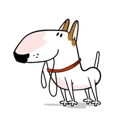
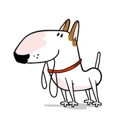

The Golden Retriever is one of the most popular dog breeds.
The breed’s friendly, tolerant attitude makes them great
family pets. These dogs are fairly easy to train and get
along in just about any home or family. They’re great with
kids and very protective of their humans.
HISTORY AND BACKGROUND
Golden retrievers originated from the Scottish Highlands, where they were used
primarily as hunting dogs. The Scottish estate owners needed a dog that could
retrieve birds either in water or on land because their hunting grounds had many
ponds and marshes.During the early 20th century, golden retrievers were introduced
to North America as both a hunting dog and a companion.The golden retriever was
officially recognized by the American Kennel Club in 1925
NATURE AND LIVINGHOOD
Affectionate with family
Kid-friendly
Friendly towards stranger
Easy to train
Intelligent animal
HOW THEY LOOK
Golden retriever males are 58-62cm tall and weigh about 29-32kg. Females
are about 53-55cm tall and weigh about 25-29kg.The golden retriever has a
water-repellent coat that is wavy or flat and gold to cream in color. One
of the most attractive features of this breed is the feathering on the neck,
legs, thighs, underside and tail.
TIME TO GROW YOUR OWN DOG!
Now you have to follow or actually you have to know few tips before buying your own puppy
STEPS TO FOLLOW
Getting your home ready to share with a dog isn’t quite as intense as getting
ready for a baby.
They won’t be able to be left for more than an hour or so at most for a
few weeks, so planning ahead is a big deal.
Be patient and practice positive reinforcement to teach your dog the house
rules and how you expect him to behave.
Make a life-long commitment to take care of your dog by providing him with adequate
nutrition, exercise, and interaction
as well as veterinary care and training..
Buy a collar, leash, and tags for your new puppy.Your puppy's
tags should include its name, your name, your phone number, and your address.
Choose a spot that is out of the way, so that the puppy isn’t underfoot.
It’s also important to select an area where
your puppy won’t feel isolated from the rest of the family.
A corner of the living room is a good choice.
LIFESPAN
The average lifespan for a Golden Retriever is about 11 to 12 years
DISEASES GOLDEN RETRIEVER GETS AFFECTED
Hip Dysplasia-Deformation of either the hip socket or femoral head can cause
uneven bone wear and can unduly stress the attached
ligaments.
Hemangiosarcoma is an aggressive and fast-growing form of cancer seen in dogs
overall and in Goldens in particular.
subvalvular aortic stenosis (SAS)—a narrowing of the vessel that carries
oxygenated blood from the heart to the body.
They are also at risk for allergic skin reactions—and the
presence of mites, ticks, and other parasites
HYGIENE AND HEALTH
Watch her diet
Make sure she gets plenty of exercise
Regularly brush her teeth and coat
Be sure to adhere to the schedule of examinations and vaccinations that is recommended
for her.
quickly developing nails that require regular cutting or crushing to prevent
mishaps, parting, and splitting.
FOOD NUTRITION
Stay as far away as possible from filler ingredients which includes as soy, corn, rice,
etc.
Always choose a dog food with high meat content---not just high protein
as it comes from vegetable sources as well
Macros matter more than total calories per meal do
80% of your dog’s daily calories should come from the kibble or dog food.
The rest 20% can be allotted to treats.


 
